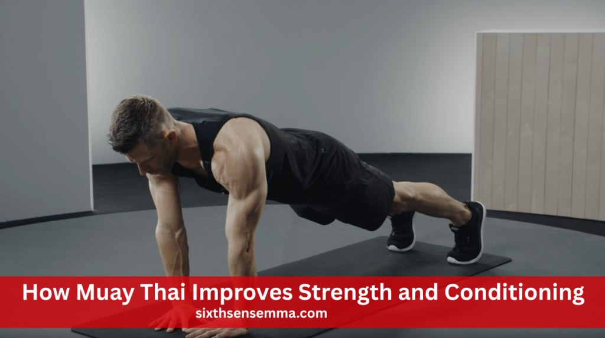
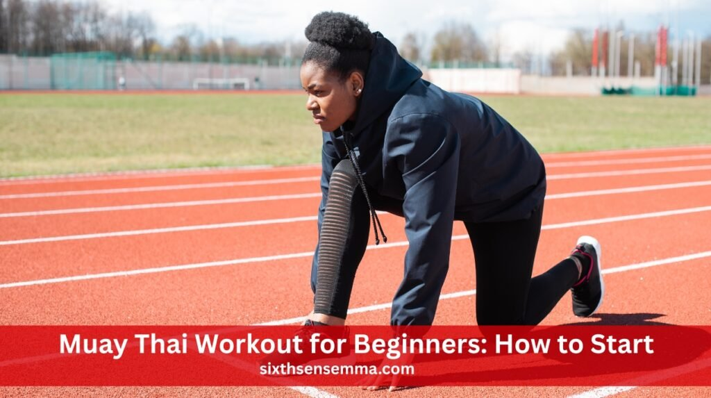

Muay Thai Fitness Workout: Burn Fat, Build Strength
Muay Thai fitness workout is the perfect mix of cardio, strength, and striking that helps you burn fat, build lean muscle, and boost endurance—all without stepping into a ring. Inspired by traditional Muay Thai, this high-energy workout uses powerful kicks, punches, and bodyweight exercises to get you in shape fast. It’s fun, effective, and designed for all fitness levels.
Why is a Muay Thai fitness workout more effective than a regular gym routine?
A Muay Thai fitness workout combines cardio, strength, and skill training into one powerful session. Unlike regular gym routines that isolate muscle groups, Muay Thai works your entire body while improving agility, endurance, and coordination. Plus, it’s fast-paced and fun keeping you more motivated and consistent over time.
What Is a Muay Thai Fitness Workout?
A Muay Thai fitness workout blends traditional Muay Thai strikes with high-intensity cardio and strength training. It’s made for people who want to get in shape without stepping into a ring. This workout style helps improve stamina, burn fat, tone muscles, and build mental focus through powerful, dynamic movement.
What Makes It Different from Regular Muay Thai
Regular Muay Thai focuses on fight training—sparring, clinching, and ring tactics. A Muay Thai fitness workout, on the other hand, skips the combat. Instead, it uses the same punches, kicks, and drills to get your heart pumping and muscles working—making it ideal for fitness without physical contact.
Why It’s Popular for Fitness Lovers
Fitness lovers are drawn to Muay Thai fitness workouts because they’re fun, fast-paced, and super effective. These workouts burn calories fast, work every major muscle group, and improve agility and coordination. Plus, the mix of striking and movement makes every session exciting, helping people stay consistent with their training.
Basic Techniques Used in the Workout
The core of a Muay Thai fitness workout involves punches like jabs and crosses, elbow strikes, knee strikes, and roundhouse kicks. These are combined in combos for bag work or shadowboxing. Bodyweight moves like squats and push-ups are added to increase strength, endurance, and overall conditioning.
Also Read Our Article: Brazilian Jiu Jitsu Gi Basics: Types, Fit & Buying Tips
Benefits of Muay Thai for Fitness
A Muay Thai fitness workout targets the entire body, offering both strength and cardio benefits. You’ll build muscle, burn fat, and improve endurance—all in one session. The mix of striking and bodyweight exercises creates a balanced routine that pushes your limits while keeping workouts engaging and effective.
Physical and Mental Health Improvements
This workout improves your body and your mind. The intensity helps release stress and boosts mood, while the focus needed for techniques improves mental clarity. Over time, many people feel more confident, less anxious, and more disciplined—all key benefits that extend far beyond the training mat.
Boost in Energy, Focus, and Endurance
Training regularly boosts your energy and sharpens your focus. As your stamina builds, you’ll feel less tired throughout the day. Muay Thai challenges your body to push through fatigue, which increases your physical limits and keeps your mind sharp both during workouts and in everyday tasks.
Is Muay Thai Good for Weight Loss?
A Muay Thai fitness workout is one of the most effective ways to lose weight. Each session burns hundreds of calories through fast-paced movements. It combines fat-burning cardio with strength-building exercises, helping you slim down, tone up, and maintain a healthy weight in a fun, motivating way.
High-Calorie Burning Potential
Because you’re constantly moving—striking, ducking, and kicking—you burn calories quickly. Many people burn 600 to 1,000 calories per session depending on intensity. That makes it ideal for those looking to shed pounds while also building strength and improving cardiovascular health in less time than other workouts.
How It Supports Fat Loss and Muscle Tone
The power of Muay Thai comes from combining cardio with strength drills. Strikes like kicks and punches are resistance-based, building lean muscle. When paired with high-intensity intervals, you burn fat faster. This dual action trims fat while shaping visible muscle tone across your entire body.
Success Stories and Visible Transformations
Many people credit Muay Thai fitness workouts with transforming their bodies. Common changes include a flatter stomach, toned arms, and improved posture. Beyond looks, trainees often report feeling more confident and energetic. Visible results can often be seen within the first few weeks of dedicated training.
How Muay Thai Improves Strength and Conditioning

Muay Thai isn’t just about burning fat—it builds functional strength and serious stamina. Your back, arms, legs, and core are strengthened via repetition, bodyweight exercises, and hitting. This full-body challenge helps you perform better in daily life and other physical activities, with improved balance and endurance.
Muscle Groups Involved in Training
A Muay Thai fitness workout targets nearly every muscle group. Kicking powers your legs and glutes. Punching strengthens shoulders, chest, and arms. Core muscles are constantly engaged to stabilize movement. Together, these develop real-world strength and coordination that’s useful beyond the gym or training mat.
Role of Resistance and Bodyweight Drills
Drills like push-ups, squats, and planks are built into Muay Thai workouts. These use your own bodyweight for resistance, which builds strength without needing equipment. When mixed with striking techniques, these movements increase overall power, boost metabolism, and improve your body’s ability to handle physical stress.
Building Explosive Power and Stamina
Striking fast and hard develops explosive power, which improves your speed and force. Repeating these moves in combos builds muscular endurance. Over time, you can train longer without tiring, and your strikes become stronger and more controlled—essential for both fitness gains and performance improvement.
Major Components of a Muay Thai Fitness Workout
A solid Muay Thai fitness workout includes four key parts: warm-up, technique training, conditioning, and cooldown. Each piece helps build strength, endurance, and skill. The structure ensures you prepare your body, practice form, push your limits, and recover safely—all essential to maximizing results and avoiding injury.
Sample Muay Thai Fitness Workout Routine
Here’s how a typical Muay Thai fitness workout might look. It blends movement, skill practice, and conditioning into one efficient, high-energy session. You can adapt it to your level and space. This balance keeps the workout fun, dynamic, and scalable—whether you’re training at a gym or home.
Warm-up and Mobility Exercises
Begin with dynamic stretching and gentle aerobic exercise for five to ten minutes. Jump rope, arm circles, hip rotations, and leg swings get your blood flowing and joints loose. This part is crucial—it preps your body for high-impact movements and lowers the risk of injury during the main workout.
Striking and Technique Drills
This section focuses on practicing the basics: jabs, crosses, hooks, elbows, knees, and roundhouse kicks. Perform combos using shadowboxing, a punching bag, or pads. These drills build coordination, speed, and muscle memory while keeping your heart rate high for fat-burning and endurance improvement.
Conditioning and Cooldown Section
End your workout with circuits of bodyweight exercises like squats, burpees, mountain climbers, and push-ups. Afterward, stretch your hips, shoulders, and legs deeply to reduce soreness. This part helps you recover, avoid stiffness, and prepare your body for the next session—essential for long-term progress.
Also Read Our Article: Top Mixed Martial Arts Brands for Gear & Apparel
Can You Do Muay Thai Workout at Home?
Yes, a Muay Thai fitness workout is totally doable at home. You don’t need a lot of space or fancy gear to get a good sweat. With just your bodyweight and basic movements, you can still enjoy an effective, high-energy session right from your living room.
Equipment You May or May Not Need
Not all MMA equipment is essential when starting out. While gloves and mouthguards are must-haves, items like shin guards, headgear, or grappling dummies depend on your training style, goals, and budget. Choose gear wisely based on need.
Sample At-Home Routine for Small Spaces
Start with jumping jacks or jump rope to warm up. Follow with shadowboxing combos like jab-cross-kick, then add air squats, lunges, planks, and push-ups. Finish with stretching. This simple routine fits into tight spaces and still delivers a full-body workout without needing gym equipment.
Tips for Staying Consistent at Home
Set a fixed schedule to keep yourself on track. Track your progress weekly to stay motivated. Break your goals into small wins, like mastering a combo or increasing reps. Use YouTube or training apps for guidance and variety. Most importantly, keep it fun and consistent.
Muay Thai Workout for Beginners: How to Start

Your first Muay Thai fitness workout may feel intense—but exciting! Start slow and focus on learning form over speed. Treat each session as an opportunity to get better and have patience with yourself. With practice, you’ll build strength, skill, and confidence in no time.
What to Expect in Your First Class or Session
Expect a warm-up, instruction on basic strikes, and a bodyweight-based workout. Trainers will guide you through movements like jabs, kicks, and knees. Don’t worry if it feels tough—everyone starts somewhere. The key is to keep moving, ask questions, and enjoy the process.
Must-Know Tips Before Beginning
Wear moisture-wicking clothes, bring water, and arrive early. Stay focused on technique, not how fast or strong others are. Breathe deeply during movements and don’t be afraid to take breaks. Learning proper form early on helps prevent injury and sets you up for long-term progress.
Avoiding Common Beginner Mistakes
Don’t skip your warm-up or try to go all out right away. Many beginners overtrain or push too hard without learning proper technique. Also, avoid comparing your progress to others. Stay consistent, be kind to your body, and focus on one improvement at a time.
Safety Considerations
To get the most from your Muay Thai fitness workout, you need to stay safe. That means taking time to warm up, using proper gear, and knowing when to rest. Training smart prevents injury and helps you build strength without setbacks—so you can keep improving.
Proper Warm-Up and Stretching Techniques
Start every workout with dynamic movements like jump rope and leg swings. These warm up your muscles and increase blood flow. After training, stretch your hips, shoulders, and hamstrings to help your body cool down. Skipping this step increases the risk of injury and muscle stiffness.
Using the Right Gear to Prevent Injuries
Even in fitness-based sessions, gear matters. Wear hand wraps and gloves for bag work. Use proper shoes or go barefoot on padded surfaces to protect your joints. Comfortable, breathable clothing lets you move freely. Quality gear supports your form and helps prevent common training injuries.
Knowing Your Limits and Avoiding Overtraining
It’s tempting to push hard every session, but rest is key. Take rest days and listen to your body—soreness is okay, pain is not. Overtraining can lead to injuries or burnout. It’s better to train consistently at 80% than to go all out and stop from exhaustion.
Conclusion
A Muay Thai fitness workout is a powerful, fun, and effective way to burn fat, build strength, and boost overall fitness. Whether you train at the gym or home, it’s a high-energy, full-body experience that delivers results. With consistent effort, smart safety practices, and a focus on learning, Muay Thai can truly transform your health and body.
FAQ’s
Yes, Muay Thai can definitely shape your body. It helps tone muscles, burn fat, and build lean strength—especially in your core, arms, and legs. With consistent training, you’ll start seeing visible physical changes.
Yes, Muay Thai is a complete full-body workout. It strengthens your arms, legs, core, and back while improving coordination and stamina. Every session engages multiple muscle groups at once.
To get fit for Muay Thai, start with basic cardio, bodyweight exercises, and stretching. Focus on building endurance and mobility to support your striking movements. Training consistently is the key to progress.
Training Muay Thai three times a week is enough for fitness and steady progress. It allows your body time to recover and improve. What matters most is staying consistent each week.
Muay Thai is more dynamic than a regular gym workout. It combines cardio, strength, and skill training in one session. Both are good, but Muay Thai offers a more exciting full-body challenge.
Yes, two years of Muay Thai is enough to build strong fundamentals. You’ll gain solid technique, fitness, and mental toughness. It’s a great foundation whether you’re training for fitness or competition.
Absolutely—Muay Thai is excellent for fat loss. Its high-intensity movements burn hundreds of calories each session. It also boosts your metabolism and tones your muscles at the same time
Muay Thai is exhausting because it uses your whole body non-stop. You’re striking, moving, and reacting constantly. The intensity is high—but that’s exactly what makes it effective.
There’s no perfect body type for Muay Thai—anyone can train and succeed. Agility, strength, and technique are more important than shape or size. With practice, your body will adapt and improve.
Yes, cycling is a great cross-training option for Muay Thai. It builds leg strength and improves cardiovascular endurance. It’s also excellent for recovery and maintaining stamina outside of striking sessions.
Muay Thai can be started at any age. It’s great for kids, teens, and adults alike. The earlier you begin, the more time you have to build skill and fitness, but it’s never too late to start.
Train with us in Coppell
The first class is free. Shorts, a t-shirt and a water bottle. We lend the rest.
Book a free class